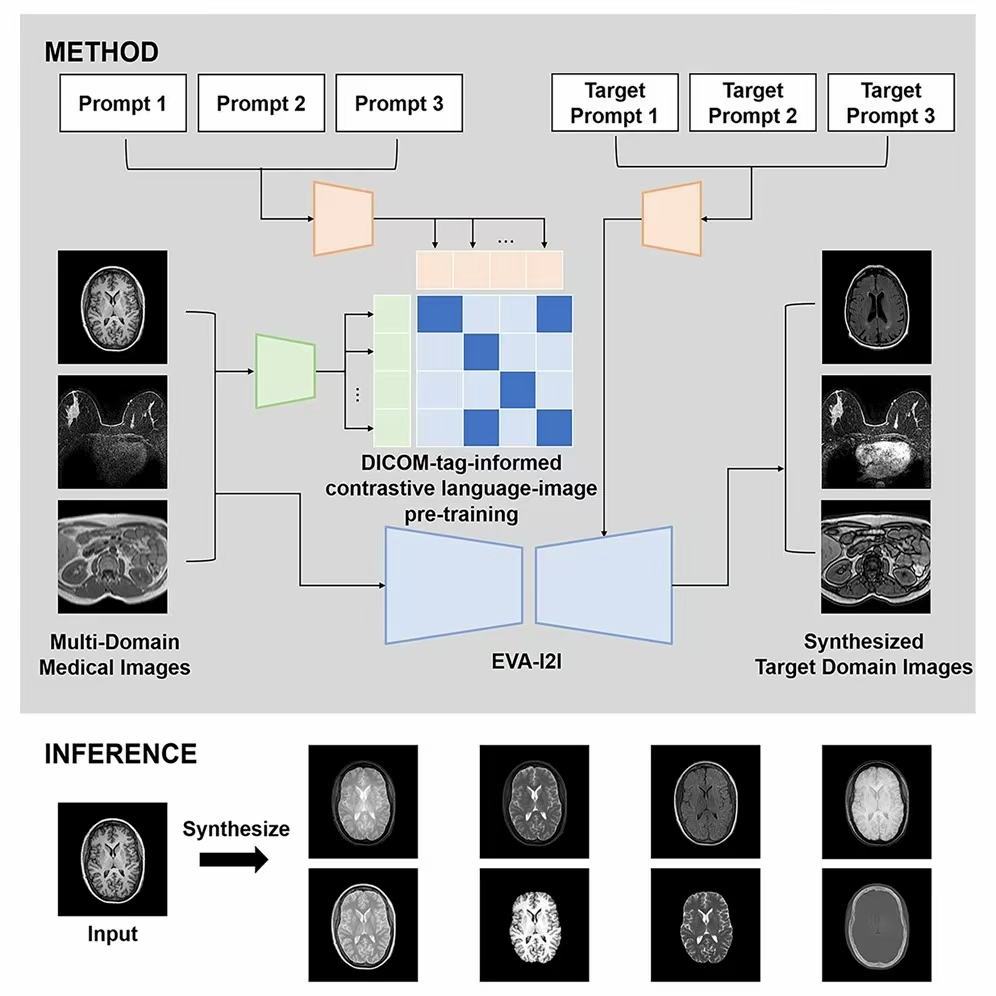

With the rapid accumulation of multimodal medical image data sets, it has become an urgent need for clinical and scientific research to develop a model that can carry out sequence conversion across multimodal data. However, the existing multimodal image transformation methods usually rely on task specific architecture or discrete domain labels, which have obvious limitations in scalability and generalization.
On August 11, 2025, Tan Tao team of the Macao Polytechnic University and ritse Mann team of the medical center of the University of nemegen in the Netherlands published a research paper entitled "all in one medical image to image translation" in cell reports methods, a journal of cell press. This study proposes an eva-i2i framework driven by contrast language image pre training (dclip) with DICOM semantic tags, which can realize image conversion between different modes in a single model, and has the potential of zero sample domain adaptation, and can be directly deployed to clinical tasks without fine-tuning.

The research team noted that the traditional multimodal image conversion method usually takes different imaging modes or sequences as independent domains and distinguishes them by independent thermal coding. When this method is extended to new domains, the coding length will increase continuously, and the fine-grained semantic differences between different domains cannot be captured. To this end, the research team proposed the eva-i2i (every domain all at once image to image) framework, which converts the information of organs, modes, sequences, etc. of each scanned image into natural language prompts to define the image domain. This hint driven representation can not only flexibly distinguish fine-grained semantic differences, but also easily extend to unknown domains.
Based on 7 public data sets and a total of 27950 3D scans (covering brain, breast, abdomen, pelvic cavity and other parts), the research team jointly trained all known modes at one time. The image generated by the model is superior to the existing baseline method in quality, and also performs well in image conversion of external data sets. More importantly, the model also shows the potential of zero sample domain adaptation on external data, which can transform unknown domains into known domains, and expand its potential application range. In addition, in downstream tasks such as cross modal registration, classification and segmentation, the model does not need to be fine tuned in the target domain, and can achieve the same or even better performance on the external dataset as the fine tuning method. This provides a plug and play solution for the common problem of cross modal domain adaptation in clinic.

The eva-i2i model proposed by the research team provides an extensible new paradigm for constructing a universal and multimodal medical image conversion model. Through DICOM semantic prompt coding, the model not only overcomes the inherent limitations of the single hot coding, but also provides a potential solution for image data standardization and analysis across centers and imaging protocols. This research result is expected to be applied in clinical practice, and help doctors achieve efficient image domain adaptation between different imaging protocols and devices, so as to improve diagnostic consistency and cross agency collaboration efficiency.